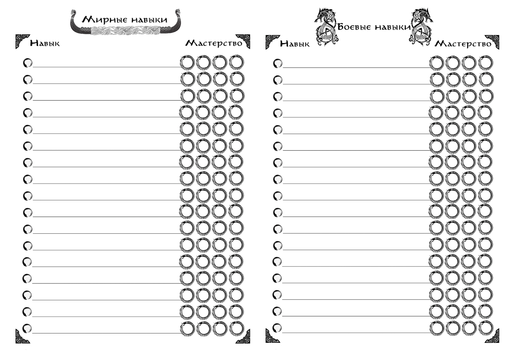

Навыки

Навыки – это основной инструмент персонажа в достижении большинства целей, совокупность его знаний, умений и профессиональной подготовки. Отсутствие Навыка не ограничивает персонажа в возможных действиях, однако действие без Навыка в соответствующей области будет требовать абсолютного критического успеха.
У навыков есть четыре уровня мастерства – Новичок, Умелец, Профессионал и Мастер.
Новичок требует для Полного Успеха действия четырёх попаданий в диапазон, при этом числа верхней и нижней границы диапазона не считаются успехами.
Умелец требует трёх попаданий, при этом числа верхней границы диапазона считаются успехом.
Профессионал требует двух попаданий, учитывая числа и верхней, и нижней границы.
Мастер требует хотя бы одного попадания в диапазон, при этом любая выброшенная четвёрка считается попаданием.
У каждого Навыка есть своя стоимость в условных «Очках Навыков» (ОН), за которые навык «покупается» при генерации. Получение и развитие Навыков внутри игры происходит при их активном использовании. Прогресс навыка считается в тех же «Очках Навыков», при этом каждый следующий уровень мастерства требует большей практики и большего количества накопленных очков.
Чтобы освоить новый Навык на уровне «Новичка», необходимо накопить 10 ОН. Развитие до уровня «Умельца» потребует 20 ОН. Уровень «Профессионала» обойдётся ещё в 25 ОН. И, наконец, чтобы достигнуть уровня «Мастера» необходимо будет накопить 40 ОН.
При обучении новому Навыку до уровня «Новичка» и его развитии до уровня «Умельца» начисляется 2 ОН за его успешные применения, и по 1 ОН за провалы. Развитие Навыков до уровней «Профессионал» и «Мастер» приносит 1 ОН только за успешные применения.
Навыки делятся на два вида: Мирные и Боевые. При генерации даётся 15 ОН на мирные навыки и 10 ОН на боевые навыки. Уровень стартового мастерства определяется сложной проверкой 4d6 в диапазон 2d6 для мирных, и встречной проверкой 4d6 против 2*2d6, где второй бросок является условным уровнем встреченных противников – для боевых.
Заявленный навык не может быть меньше уровня «Новичка», то есть при полном провале останется базовый уровень навыка, и при генерации не может быть получен уровень «Мастера», если иное не предусмотрено легендой персонажа.
И в Мирных, и в Боевых навыках есть категории Общих навыков, доступных всем персонажам по стандартной стоимости, и Обязательных навыков, доступных по сниженной стоимости персонажам с соответствующим Родом занятий.
Обязательные Навыки, соответствующие выбранному Роду занятий, требуют меньше ОН для достижения последних двух уровней мастерства – 20 и 35 соответственно. Это относится и к выбранным при создании персонажа, и к тем, что стали осваиваться уже в процессе игры.
Примеры мирных навыков
| Название | Категория | Цена | Описание |
|---|---|---|---|
| Алхимия | Обязательный | 5 (4) | Позволяет создавать новые алхимические составы: мази, зелья, яды, технические смеси. |
| Травничество | Общий | 1 | Поиск, сбор и обработка растений. |
| Экстракция | Обязательный | 3 (2) | Извлечение и обработка ингредиентов животного происхождения. |
| Верховая езда | Обязательный | 3 (2) | Позволяет управлять верховыми животными соответствующего размера. |
| Езда на верховых платформах | Общий | 4 | Позволяет управлять крупными и огромными верховыми животными с верховой платформы. |
| Первая помощь | Общий | 2 | Позволяет стабилизировать Ранения, выводить из состояния «При Смерти» и исцелять Лёгкие Раны. |
| Медицина | Обязательный | 5 (4) | Персонаж может проводить сложные операции, лечить любые ранения и увечья, применять сложные алхимические составы при исцелении. |
| Выживание | Общий | 2 | Включает в себя умение рыбачить, находить подножный корм, разжигание костров и заготовку угля, создание импровизированных убежищ и плавание. |
| Атлетика | Общий | 2 | Наделяет персонажа хорошей физической формой, позволяет дольше и быстрее бегать и плавать, лучше лазать и переносить тяжелые условия. |
| Командование | Обязательный | 4 (3) | Наделяет персонажа лидерскими качествами, позволяет успешно разрешать спорные ситуации внутри отряда, уменьшить получаемый отрядом стресс и эффективнее применять его в различных ситуациях. |
Примеры боевых навыков
| Название | Категория | Цена | Описание |
|---|---|---|---|
| Владение древковым колющим | Обязательный | 2 (1) | Персонаж умеет обращаться с двуручным колющим оружием на длинном древке. Уровни навыка 3-4 дают бонус против крупных и огромных существ, а также верховых противников, убирая нижнюю и верхнюю границы диапазона сопротивления. |
| Владение одноручным дробящим | Обязательный | 2 (1) | Персонаж умеет обращаться с одноручными дубинами, булавами, цепами, молотами и прочими видами ударно-дробящего оружия. Уровни навыка 3-4 дают бонус против врагов, носящих броню, убирая нижнюю и верхнюю границы диапазона сопротивления. |
| Бой на верховых платформах | Общий | 4 | Персонаж может сражаться с верховых платформ, использующихся вместо сёдел на существах большого размера. Требует «Езды на верховых платформах». |
| Управление военными машинами | Обязательный | 5 (4) | Персонаж может управлять отрядом в бою. Позволяет сократить потери среди бойцов и повысить их эффективность. |
| Тактика | Обязательный | 5 (4) | Персонаж может управлять отрядом в бою. Позволяет сократить потери среди бойцов и повысить их эффективность. |
| Метание | Общий | 2 | Персонаж может эффективно швырять подручные предметы в бою. |